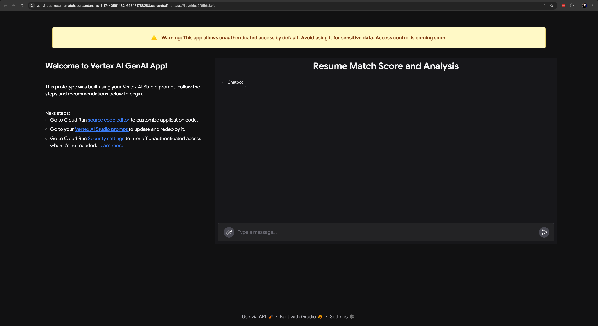
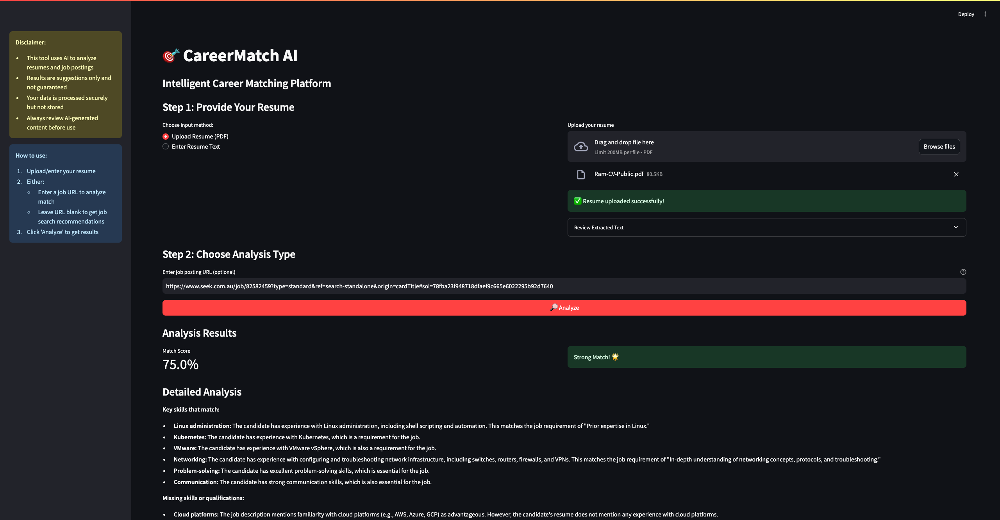
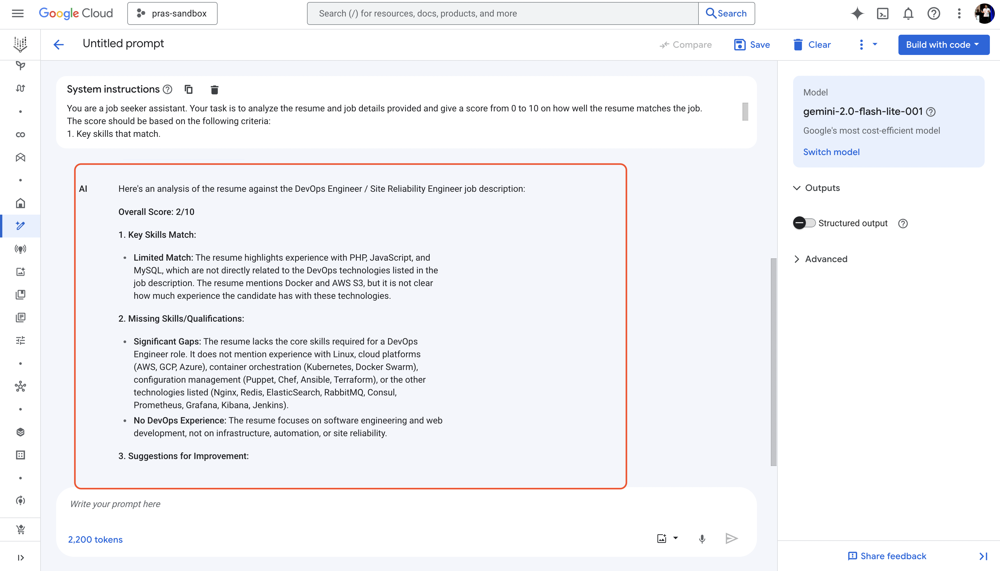
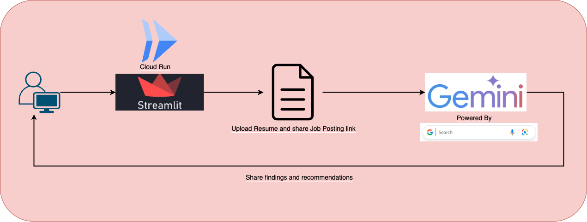
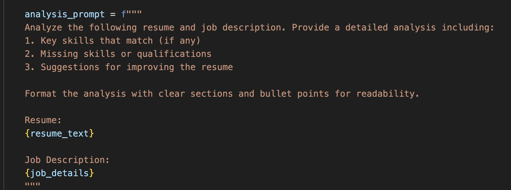

Welcome to the Google Build With AI event series!
In this hands-on workshop, we will explore how to leverage Google Gemini to create a powerful job seeker assistant. This session is designed for developers, data scientists, and anyone eager to harness AI to streamline workflows, unlock new possibilities, and drive innovation in their projects and everyday life.
Gemini LLM
Gemini is a suite of advanced artificial intelligence models created by Google DeepMind. What sets it apart is its ability to understand and work with various forms of information, not just text. This means it can handle and combine things like images, sounds, videos, and code, in addition to written language. - Source
Vertex AI
Vertex AI is Google Cloud's comprehensive platform designed to help developers and businesses build and deploy AI applications, especially those powered by generative AI. Access and utilize AI Studio, Agent Builder, and 160+ foundation models including Gemini 2.0 from Vertex AI. - Source
A sneak peak into what you will be deploying to Google Cloud today
The application deployed to Google Cloud Run uses Gradio for the front end interface which handles the interaction with Vertex AI. Features include resume analysis, similarity scoring, and personalized job recommendations. 
If time permits, we will also deploy a custom version of the CareerMatch AI application using Streamlit, a popular framework for building web applications in Python. 
Before starting this workshop, ensure you have:
- A Google Cloud Platform account (for those who want to deploy their version) and credits will be provided, so a Google account will be enough.
- Some familiarity with serverless cloud services like Google Cloud Run
- Interest in practical applications of generative AI
Note: Please be aware of the Vertex AI Pricing as well.
- Sign in to Google Cloud Console and create a new project
- Ensure you have selected the project created in step 1 if you have multiple projects.

- Navigate to Vertex AI from your Google Cloud Console. Search and click on
Vertex AIfrom the search bar to find the page,
- Enable required APIs for Vertex AI

- Then, click on
Create Promptfound on the Main menu on the left side of the page. - This is the page where you can create a prompt and test your application logic. You can choose from different models, including Gemini 2.0, and customize the prompt to suit your needs.
- Ensure you have selected the
gemini-2.0-flash-lite-001model. Then, paste the following prompt in theSystems Instructionsbox:
You are a job seeker assistant. Your task is to analyze the resume and job details provided and give a score from 0 to 10 on how well the resume matches the job.
The score should be based on the following criteria:
1. Key skills that match.
2. Missing skills or qualifications.
3. Suggestions for improving the resume or get better qualifications to better match the job.
The score should be a number between 0 and 10, where 0 means little to no match and 10 means a perfect match.
Any questions irrelevant to matching the resume and job details should be replied to with - Sorry, I cannot help you with that, I am a job seeker assistant and I can only help you with matching resumes and job details.
- On the right hand side panel, click on
Advancedwhich will reveal 3 advanced prompt settings you can configure to enhance the performance of the model:- Temperature: This setting controls the randomness of the model's output. A higher temperature value (e.g., 0.8) will make the output more creative and diverse, while a lower value (e.g., 0.2) will make it more focused and deterministic.
Set the value to 0 for a more deterministic output. - Output Token Limit: This setting controls the maximum number of tokens (words) the model can generate in its response.
Set this value to 4096 to allow for longer responses. - Top P: This setting controls the diversity of the model's output by sampling from the top P percentage of the probability distribution. A higher value (e.g., 0.9) allows for more diverse outputs, while a lower value (e.g., 0.5) makes the output more focused on the most likely words.
Set this value to 0 for a more focused output.
- Temperature: This setting controls the randomness of the model's output. A higher temperature value (e.g., 0.8) will make the output more creative and diverse, while a lower value (e.g., 0.2) will make it more focused and deterministic.
- Safety Filters: Gemini 2.0 has safety filters to prevent the generation of harmful content. You can enable or disable these filters based on your requirements. By default, these filters are disabled.
- Its time to provide Gemini with a prompt. Enter the job details and sample resume in the prompt section,
JOB DETAILS:
DevOps Engineer / Site Reliability Engineer - Freelancer.com
Location: Sydney, NSW
Organization: Freelancer.com
Position: Full-time
About the Role:
As a key member of the Systems Engineering team, you'll work with software engineers to design and deliver mission-critical services. You'll manage large-scale infrastructure using cutting-edge technologies supporting the high-traffic Freelancer.com marketplace and other products deployed in AWS. The tech stack includes Nginx, MySQL, Redis, ElasticSearch, RabbitMQ, Consul, Docker, and Kubernetes. Your focus will be building resilient, scalable systems using Terraform, Puppet, Prometheus, Grafana, Kibana, and Jenkins.
Required Skills:
* Strong knowledge of OS, networking, and systems architecture
* Experience with Linux and production-scale database/web servers
* Cloud platform expertise (AWS, GCP, Azure, VMware, OpenStack)
* Container orchestration skills (Docker, Kubernetes, Docker Swarm, AWS ECS)
* Configuration management experience (Puppet, Chef, Ansible, CloudFormation, Terraform)
* Programming skills in Python, Go, PHP, Ruby, or Node.js
* Incident response capabilities and security mindset
* Preferred: CS/Engineering degree or equivalent
Benefits:
* Career growth opportunities in a meritocratic culture
* Weekly team lunches
* Fully stocked kitchen and office bar with harbour views
* Engaging town halls with open CEO Q&A
* Regular team events and hackathons
* Prime office location with wellness programs
* Global impact helping millions access work opportunities
* Internal promotion opportunities
Company Overview:
Freelancer.com owns Escrow.com ($6B+ in transactions) and Freightlancer & Loadshift (650M+ km in freight postings).
RESUME:
# Ram Ghale
**Location:** Sydney, Australia
**Contact:** +61 4xY 123 123
**Email:** Name@gmail.com
**Links:** LinkedIn | GitHub | Website
## Summary
Software engineer with 3 years of experience in full-stack web development. Specializes in building digital solutions using PHP, JavaScript (React.js), and MySQL. Passionate about creating scalable, user-focused products.
## Experience
### Software Engineer - Growcept.com
*Kathmandu, Nepal | April 2017 - June 2018*
- Developed and customized WordPress themes for XYZ marketplace and WordPress.org
- Rebuilt e-commerce portals using WooCommerce, implementing analytics tools (10% sales improvement)
- Standardized theme development process for improved consistency and scalability
- Implemented live commentary system for WicketNepal, increasing traffic by 20%
- Created efficient onboarding workflow using Docker, Git, and WP themes
### Backend Engineer - Intellisoft Nepal
*Kathmandu, Nepal | March 2016 - March 2017*
- Developed software products, databases, and API endpoints for enterprise clients
- Implemented Agile scrum methodology for faster feature releases
- Created office management system, improving efficiency by 40%
- Reduced application server costs by 25% through AWS S3 implementation
## Side Projects
- Musical chord progression generator (React.js)
- Node.js REST API for Australian tech companies offering work visas
## Education
**Bachelor of Engineering in Information Technology** (2017)
Nepal College of Information Technology - Pokhara University
## Additional Information
- **Work Rights:** Full-Time up to September 2025 (Masters Spouse Visa - 500)
- **Languages:** Nepali, English (IELTS 7 overall)
- **Volunteering:** Nepal Open Source Klub member - organized community events, taught Linux tools
- Click on
Submitto get the response from Gemini 2.0.
- The response will include the score, key skills that match, missing skills or qualifications, and suggestions for improving the resume. We can see that the resume is not a good match for the job posting. The application provides a 2/10 score, indicating that the resume does not align well with the job requirements. 
- Click on the
Savebutton to save the prompt for future use.
- Enter a name for the prompt like
Resume Match Score and Improvement Suggestionsand click onSave. It might take a few seconds to save the prompt. You may also need to retry saving the prompt if you get an error as these are usually intermittent and can be resolved by retrying. - All saved prompts will be accessible via Prompt Management Page

- Hurray! we have successfully created and saved a prompt using Vertex AI

When we add a prompt to Vertex AI, it automatically generates a code snippet that can be used to call the model programmatically. We can also deploy the prompt as a web application directly from within Vertex AI.
- Click on the
Get Codebutton to get the code snippet. This code can be run in a Python environment, such as Cloud Shell environment, Jupyter Notebook or Google Colab.

- Vertex AI uses gradio to create a web application for the prompt and deploy it to Google Cloud Run. Click on
Deploy as appto deploy the application to Google Cloud Run. - Click on
Enable required APIsto enable the necessary APIs for deploying the application. - Acknowledge the terms that the application will be deployed publicly and click on
Create app. It may take a minute or two to create the app. - Once ready, click on the
Open appbutton to open the application in a new tab. - You can also find the
Open appbutton when you click onBuild with code, - Lets ask Gemini to share insights on its previous analysis to see if it still has context.
Share your insight on previous analysis of the provided resume and job description
- Great, now we will provide a new job description and see how well the resume matches the new job description.
Given the resume provided earlier , please analyze the following job description and share your insights on how well the resume matches the new job description.
JOB DETAILS:
Job Description: WordPress Developer - InnovaWeb Solutions
Location: Remote (with occasional travel to Sydney, Australia headquarters)
About InnovaWeb Solutions:
InnovaWeb Solutions is a rapidly growing digital agency specializing in crafting innovative, high-performance websites and web applications. We empower businesses of all sizes with cutting-edge digital solutions, focusing on user-centric design, robust functionality, and measurable results.
Position Details:
- Full-time WordPress Developer
- Technical leadership role for all WordPress projects
- Architecture, development, implementation and maintenance responsibilities
Key Responsibilities:
- Design scalable WordPress solutions following best practices
- Custom theme/plugin development and integrations
- Conduct code reviews and maintain quality standards
- Collaborate with clients on requirements
- Stay current with WordPress technologies
Required Skills:
- 2+ years full stack web development experience
- Knowledge in PHP, HTML, CSS, JavaScript, MySQL
- Wordpress development
- Git version control
- Performance optimization expertise
- Strong communication and problem-solving skills
Preferred Skills:
- Building e-commerce portals via WooCommerce
- Agile methodologies
- Front-end frameworks (React, Vue.js)
- UI/UX design principles
Benefits:
- Competitive salary
- Remote work flexibility
- Professional development opportunities
- Collaborative environment
- Diverse project portfolio
- Company events and activities
- Comprehensive benefits package
The resume is a close match to the new job description and Gemini provides a score of 7/10. This can be attributed to the fact that the resume includes experience in WordPress development and backend engineering, which aligns well with the job requirements. The application also suggests some improvements to the resume, such as adding more details about their past experience and skills related to the job posting.
Congratulations! You have successfully created a job seeker assistant we application using Vertex AI and Google Cloud Run. The application can analyze resumes, match candidates with job postings, and recommend the best career opportunities.
In this section, we will deploy our own version of CareerMatch AI application to Google Cloud Run. The application is built using Streamlit, a popular framework for building web applications in Python. Streamlit is similar to Gradio, and they both provide a simple way to create web applications. 
- Lets analyze the code for CareerMatch AI and deploy it to Google Cloud Run. The application is built using Streamlit, a popular framework for building web applications in Python

- Once the user provides the resume file/text and job details, the application uses the
google-genailibrary to call the Gemini model and get the analysis and matching score. The results are then displayed on the web page. - The analysis prompt is shown below, 
- If no job details are provided, the application uses the grounding feature of Gemini to suggest the best ways to find relevant job postings. The application provides a list of job boards and websites where the user can find job postings related to their skills and experience.
- To deploy the application on Google Cloud Run, navigate to the following GitHub repository and click on the
Run on Google Cloudbutton found in Readme, - This will redirect you to the Google Cloud Console, where you are required to trust the repository and authorize cloud shell
- A cloud shell machine will be provisioned for you, and the code will be cloned into the cloud shell environment. Select the project you created earlier and click on
Continueto proceed.
- If you get a
Quota exhaustederror, please retry the deployment process by running the following command in the cloud shell terminal,
rm -rf careermatch-ai && cloudshell_open --repo_url "https://github.com/boltdynamics/careermatch-ai.git" --git_branch "main" --page "shell" --force_new_clone
- The process will enable Cloud Run APIs on the project. Select
us-central1for the region.
- The process will build a Docker image for the application, upload it to Artifact Registry and deploy it to Google Cloud Run service. This may take a few minutes.
- Congratulations! The application has been successfully deployed to Google Cloud Run. You can access the application using the URL provided in the terminal

- Lets try out the application by uploading a resume and job details. Download this sample resume in PDF format.
- Click on
Browse Filesto upload the resume file. The resume highlights experience in Wordpress Development and Backend Engineering. Paste this job post link in theEnter job posting URLsection and click onAnalyzeto get the analysis and matching score.
- We can see that the resume matches the job posting for Wordpress Specialist at Cadence Connect. The application provides a 75% match score, indicating that the resume aligns well with the job requirements. It also suggests some improvements to the resume, such as adding more details about their past experience and skills related to the job posting.
- If the match is above 50%, the application will automatically generate a cover letter for the job posting. You can download the cover letter by clicking on the
Download Cover Letterbutton. - Now lets try out a different job posting that is very different from the resume. Paste this job post link in the
Enter job posting URLsection and click onAnalyzeto get the analysis and matching score. - We can see that the resume does not match the job posting for a Electronic Warfare Operator. Software engineering and Military Warfare are two very different careers and as a result, the application provides a 5% match score, indicating that the resume does not align well with the job requirements.
- You can also leave the job posting URL section empty and click on
Analyzeto get the analysis on a broad level. Gemini uses grounding feature to leverage Google search and suggest best ways to find relevant job postings. The application provides a list of job boards and websites where the user can find job postings related to their skills and experience.

- You can also try out different job postings and resumes to see how well the application performs.
Congratulations! You have successfully deployed a job seeker assistant application using Google Gemini and Streamlit on Google Cloud Run. The application can analyze resumes, match candidates with job postings, and recommend the best career opportunities.
Even after your Google Cloud credits expire, the fun doesn't stop — keep experimenting and generating code with Google AI Studio.
Google AI Studio, including Gemini Pro and Gemini Pro Vision, is currently free to use, and there are no charges for Google AI Studio usage, regardless of whether you set up billing for the Gemini API.
NOTE: While currently free, there may be future charges for using Google AI Studio service, but this is not yet in effect.
In this workshop, we explored how to leverage Google Gemini to create a powerful job seeker assistant. We learned how to create and fine-tune prompts in Vertex AI, deploy the application to Google Cloud Run, and analyze resumes and job postings.
We also discussed the importance of using advanced prompt settings to enhance the performance of the model and how to deploy the application on Google Cloud Run. Responsible AI practices were also emphasized throughout the workshop.
We hope you found this workshop informative and valuable. If you have any questions or feedback, please feel free to reach out.